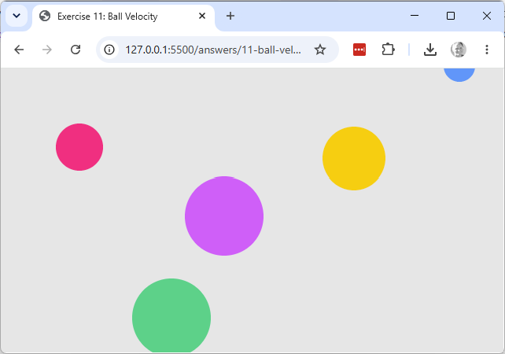

Explore & modify
Working copy: exercises/11-ball-velocity/.
- Set one ball's
vx/vyto(0, 0)insetup()and run the sketch — confirm that ball alone stays still while the others move.

- Split the single loop in
draw()into two separate loops — one calling.move()on every ball, then a second calling.display()on every ball. Confirm the animation looks identical, and explain why the order between separate balls' move/display doesn't matter here (contrast with sketch 01/03, where order of statements mattered).